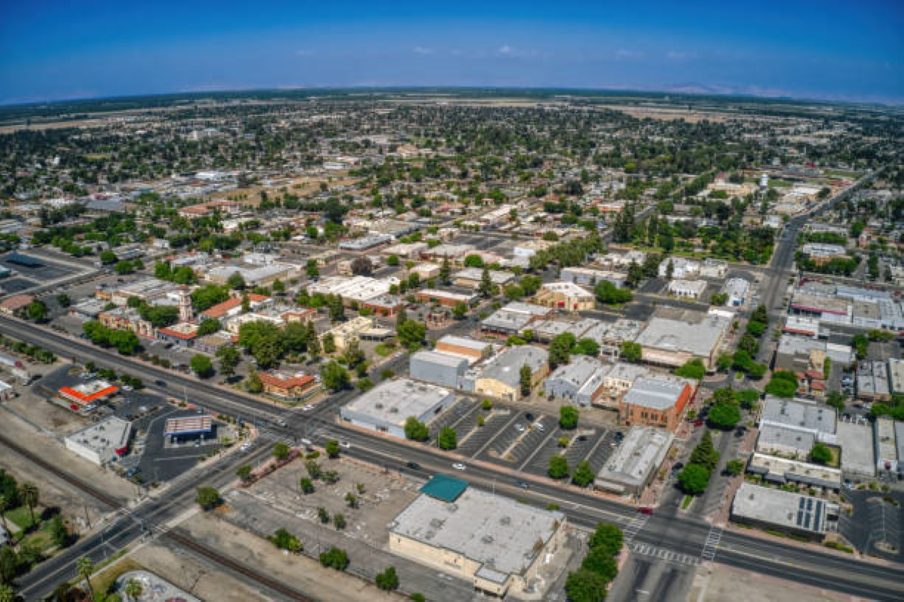

Tulare Raised
I was born in Visalia, California and grew up in Tulare, California for my entire life. I also grew up while being on the autism spectrum.
While everyone in my hometown often worked everyday monotonously, I would
often look at logos, magazine covers, billboards, and packaging labels everywhere I went as I would always notice if designs changed.
I guess you could say that was where my journey as a graphic designer began.